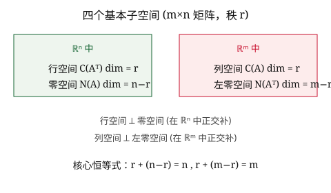

四个子空间
\(C(A)\subseteq\mathbb{R}^m\)、\(N(A)\subseteq\mathbb{R}^n\)、\(C(A^T)\subseteq\mathbb{R}^n\)、\(N(A^T)\subseteq\mathbb{R}^m\)。
18.06 · 第 11 课
每个 \(m\times n\) 矩阵 \(A\) 都自然地定义了四个子空间。它们两两正交、维数互补，构成 Strang 课程的核心结构图——线性代数的"大图景"。
设 \(A\) 是 \(m\times n\) 实矩阵，秩为 \(r\)。
| 子空间 | 记号 | 所在空间 | 维数 | 基来源 |
|---|---|---|---|---|
| 列空间 column space | \(C(A)\) | \(\mathbb{R}^m\) | \(r\) | \(A\) 的主元列 |
| 零空间 nullspace | \(N(A)\) | \(\mathbb{R}^n\) | \(n-r\) | \(A\mathbf{x}=\mathbf{0}\) 的特解 |
| 行空间 row space | \(C(A^T)\) | \(\mathbb{R}^n\) | \(r\) | RREF 的非零行 |
| 左零空间 left nullspace | \(N(A^T)\) | \(\mathbb{R}^m\) | \(m-r\) | \(A^T\mathbf{y}=\mathbf{0}\) 的特解 |
Strang 结构图。把 \(\mathbb{R}^n\) 画成"横轴"、\(\mathbb{R}^m\) 画成"竖轴"。行空间与零空间在 \(\mathbb{R}^n\) 中互为正交补（维数 \(r\) 与 \(n-r\)）；列空间与左零空间在 \(\mathbb{R}^m\) 中互为正交补（维数 \(r\) 与 \(m-r\)）。矩阵 \(A\) 把行空间同构地映到列空间。
由定义 \(A\mathbf{x}=\mathbf{0}\) 可知，\(A\) 的每一行都与 \(\mathbf{x}\) 正交，因此行空间与零空间正交：
\[C(A^T) \perp N(A), \qquad C(A^T) \oplus N(A) = \mathbb{R}^n.\]同理，\(A^T\mathbf{y}=\mathbf{0}\) 意味着 \(A\) 的每一列都与 \(\mathbf{y}\) 正交，因此列空间与左零空间正交：
\[C(A) \perp N(A^T), \qquad C(A) \oplus N(A^T) = \mathbb{R}^m.\]维数互补保证它们互为正交补（orthogonal complement）：每个子空间恰好是另一个的正交补。
矩阵 \(A\) 把向量 \(\mathbf{x}\in\mathbb{R}^n\) 映到 \(A\mathbf{x}\in\mathbb{R}^m\)。把 \(\mathbf{x}\) 按正交分解为行空间分量 \(\mathbf{x}_r\) 与零空间分量 \(\mathbf{x}_n\)：
\[\mathbf{x} = \mathbf{x}_r + \mathbf{x}_n, \qquad \mathbf{x}_r\in C(A^T),\ \mathbf{x}_n\in N(A).\]则
\[A\mathbf{x} = A\mathbf{x}_r + A\mathbf{x}_n = A\mathbf{x}_r + \mathbf{0}.\]所以 \(A\) 的核（kernel）是零空间，像（image）是列空间；\(A\) 把行空间一一地映到列空间（因为零空间中的向量都被映成零，而行空间与零空间只交于零向量）。
一一对应只在行空间上成立。整个 \(\mathbb{R}^n\) 到 \(\mathbb{R}^m\) 的映射不是一一的——零空间里的所有向量都被压成零。但限制在行空间上时，\(A\) 是可逆的。
设
\[A = \begin{bmatrix} 1 & 0 & 0 \\ 2 & 1 & 0 \\ 5 & 0 & 1 \end{bmatrix}.\]容易验证三列线性无关，所以 \(r=3\)，\(m=n=3\)。
这是满秩方阵的情形：四个子空间退化为"全空间 + 零空间"。
再看一个非方阵例子：
\[A = \begin{bmatrix} 1 & 2 & 2 & 2 \\ 2 & 4 & 6 & 8 \\ 3 & 6 & 8 & 10 \end{bmatrix},\quad r=2,\ m=3,\ n=4.\]
问题 1：左零空间 \(N(A^T)\) 是哪个向量空间的子空间？它的维数是多少？
问题 2：行空间 \(C(A^T)\) 与零空间 \(N(A)\) 的关系是什么？
问题 3：矩阵 \(A\) 把行空间 \(C(A^T)\) 映到哪里？
问题 4：若 \(A\) 是 \(m\times n\) 矩阵且列线性无关，则零空间 \(N(A)\) 的维数是多少？
\(C(A)\subseteq\mathbb{R}^m\)、\(N(A)\subseteq\mathbb{R}^n\)、\(C(A^T)\subseteq\mathbb{R}^n\)、\(N(A^T)\subseteq\mathbb{R}^m\)。
\(r,\ n-r,\ r,\ m-r\)——记住这四个数就记住了整个结构。
行空间 ⟂ 零空间；列空间 ⟂ 左零空间。维数互补保证互为正交补。
\(A\) 把行空间同构地映到列空间，零空间被压成零。
lecture_slides/lecture_11.pdflecture_summaries/lecture_1_11_summary.pdf